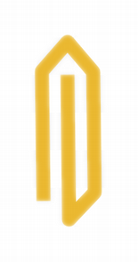

| Home · All Classes · Modules · QSS HELP · QSS 案例 · VER007 HOME |
该QPen类定义了一个QPainter要绘制形状的线条和轮廓。More...
该QPen类定义了一个QPainter要绘制形状的线条和轮廓。
一支笔有style（ ）width（ ）brush（ ）capStyle（）和joinStyle（ ） 。
笔式定义线型。画笔用于填充用钢笔生成的笔触。使用QBrush类指定填充样式。帽风格决定了可使用画线端盖QPainter，而加入的风格介绍了如何两条线之间的连接被吸引。钢笔的宽度可以在两个整数来指定（width（ ） ）和浮点（widthF（ ） ）的精度。零线宽表示化妆品的笔。这意味着画笔宽度总是绘制一个像素的宽度，独立的transformation设置的画家。
的各种设置可容易地使用相应的改性setStyle（ ）setWidth（ ）setBrush（ ）setCapStyle（）和setJoinStyle（ ）函数（注意，画家的笔下必须改变画笔的属性时被重置） 。
例如：
QPainter painter(this); QPen pen(Qt.green, 3, Qt.DashDotLine, Qt.RoundCap, Qt.RoundJoin); painter.setPen(pen);
这相当于
QPainter painter(this); QPen pen; // creates a default pen pen.setStyle(Qt.DashDotLine); pen.setWidth(3); pen.setBrush(Qt.green); pen.setCapStyle(Qt.RoundCap); pen.setJoinStyle(Qt.RoundJoin); painter.setPen(pen);
默认的笔是一个纯黑色画笔0宽，方帽风格（Qt.SquareCap）和斜角连接样式（Qt.BevelJoin） 。
此外QPen提供color（）和setColor（ ）方便的功能来提取和设置画笔的画笔的颜色，分别为。笔也可以比较和流。
有关油画一般的详细信息，请参阅Paint System文档。
Qt提供了几个代表的内置样式Qt.PenStyle枚举：
 |
 |
 |
| Qt.SolidLine | Qt.DashLine | Qt.DotLine |
 |
 |
 |
| Qt.DashDotLine | Qt.DashDotDotLine | Qt.CustomDashLine |
简单地使用setStyle（）函数的笔式转换为下列任一内置样式，除了Qt.CustomDashLine风格，我们会回来不久。将样式设置为Qt.NoPen告诉画家不画线或轮廓。默认的画笔风格Qt.SolidLine。
由于Qt的4.1 ，也可以使用指定自定义虚线图案的setDashPattern（ ）函数，它的笔的款式隐式转换为Qt.CustomDashLine。该模式的说法，一QVector，必须指定为偶数的qreal条目，其中这些条目1，3， 5 ...是虚线和2，4， 6 ...是空格。例如，上面显示的自定义模式是使用下面的代码创建：
QPen pen; QVector<qreal> dashes; qreal space = 4; dashes << 1 << space << 3 << space << 9 << space << 27 << space << 9 << space; pen.setDashPattern(dashes);
请注意，虚线图案的钢笔的宽度，如为单位指定长度为5的宽度为10的破折号是50像素长。
当前设定的虚线样式可以使用检索的dashPattern（）函数。使用isSolid（ ）函数来确定笔是否为实心填充，还是不行。
帽样式定义如何线路的终点使用绘制QPainter。帽风格只适用于宽线，即当宽度大于或等于1 。该Qt.PenCapStyle枚举提供了以下方式：
 |
 |
|
| Qt.SquareCap | Qt.FlatCap | Qt.RoundCap |
该Qt.SquareCap风格是一个正方形行结束，涵盖了终点，一半线条宽度超出了它。该Qt.FlatCap样式是方形线端未复盖的线的终点。和Qt.RoundCap样式是圆形的线端复盖的终点。
默认值是Qt.SquareCap。
不论是否端点被绘制时，钢笔的宽度为0或1取决于帽样式。运用Qt.SquareCap or Qt.RoundCap它们被绘制，用Qt.FlatCap它们不绘制。
在加入样式定义如何将两个连接线之间的连接可以使用绘制QPainter。接合风格只适用于宽线，即当宽度大于或等于1 。该Qt.PenJoinStyle枚举提供了以下方式：
 |
 |
 |
| Qt.BevelJoin | Qt.MiterJoin | Qt.RoundJoin |
该Qt.BevelJoin式填充两条线之间的三角形缺口。该Qt.MiterJoin风格延伸线，以满足在一个角度。和Qt.RoundJoin式填充两条线之间的圆弧。
默认值是Qt.BevelJoin。

当Qt.MiterJoin样式被应用，就可以使用setMiterLimit（ ）函数来指定多远斜角连接可以扩展的连接点。该miterLimit（）是用于减少线路之间的工件接合处的线是接近平行。
该miterLimit（）必须在笔为单位指定宽度，例如： 5在宽度为10的斜接限制为50像素长。默认的斜接限制为2 ，即两次以像素为单位的笔宽。
 |
The Path Stroking
Demo
路径描边演示显示了Qt内建的虚线样式，并显示自定义模式可以如何用来扩展现有模式的范围。 |
构造一个默认的黑色实线与笔宽0 。
构造一个黑色的钢笔0宽度和给定style。
See also setStyle（ ） 。
构造一个实线画笔0宽度和给定color。
See also setBrush（）和setColor（ ） 。
构造一个笔用指定的brush，width，笔style，cap风格和join风格。
See also setBrush（ ）setWidth（ ）setStyle（ ）setCapStyle（）和setJoinStyle（ ） 。
构造一个Pen，它是给定一个副本pen。
返回用于填充此笔笔划产生的刷子。
See also setBrush（ ） 。
返回画笔的端点风格。
See also setCapStyle（）和Cap Style。
返回此笔的画笔的颜色。
See also brush（）和setColor（ ） 。
返回破折号画笔偏移。
See also setDashOffset（ ） 。
返回此笔的虚线样式。
See also setDashPattern（ ）style（）和isSolid（ ） 。
返回True如果笔是化妆品，否则返回False 。
化妆品的笔用于绘制具有一定宽度笔划不管施加到任何转换QPainter它们被用于与。绘制形状与化妆品笔确保其轮廓将具有相同的厚度在不同的比例系数。
零宽度的笔是化妆品默认情况下，用钢笔一个非零宽度非化妆品。
See also setCosmetic（）和widthF（ ） 。
如果笔有一个实心填充，否则为False ，则返回True 。
See also style（）和dashPattern（ ） 。
返回画笔的接合风格。
See also setJoinStyle（）和Join Style。
返回钢笔斜接限制。斜接限制仅适用时加入样式设置为Qt.MiterJoin。
See also setMiterLimit（）和Join Style。
设置用于填充用这支笔生成的给定笔划刷brush。
See also brush（）和setColor（ ） 。
设置画笔的端点风格为给定的style。缺省值是Qt.SquareCap。
See also capStyle（）和Cap Style。
设置此笔的画笔的颜色来定color。
See also setBrush（）和color（ ） 。
设置此笔化妆或不化妆，这取决于价值cosmetic。
See also isCosmetic（ ） 。
设置在仪表偏移（在虚线模式的出发点）就本笔到offset规定。的偏移量的测量是在用于指定虚线图案的单元计。
| For example, a pattern where each stroke is four units long,
followed by a gap of two units, will begin with the stroke when
drawn as a line.
然而，如果破折号偏移量设置为4.0时，得出的任何线将开始与间隙。的偏移量高达4.0的值将导致中风的一部分首先被绘制，而值4.0和6.0之间的偏移将导致与开始的间隙部分就行了。 |
Note:这种隐式转换用笔的风格Qt.CustomDashLine。
See also dashOffset（ ） 。
设置此笔的虚线样式给定的pattern。这种隐式转换用笔的风格Qt.CustomDashLine。
图案必须被指定为偶数阳性条目，其中这些条目1，3， 5 ...是虚线和2，4， 6 ...是空格。例如：
|
QPen pen; QVector<qreal> dashes; qreal space = 4; dashes << 1 << space << 3 << space << 9 << space << 27 << space << 9 << space; pen.setDashPattern(dashes); |
虚线样式被指定在钢笔的宽度为单位;例如：长度为5的宽度为10的破折号是50像素长。需要注意的是零宽度的笔相当于一个化妆品笔与1个像素的宽度。
每个破折号也受到帽样式，因此1方形帽套破折号将扩大0.5个像素在每个方向上产生2的总宽度。
请注意，默认帽风格Qt.SquareCap的，这意味着一个正方形线端复盖了终点，并通过半线宽度延伸超过它。
See also setStyle（ ）dashPattern（ ）setCapStyle（）和setCosmetic（ ） 。
设置画笔的接合风格为给定的style。缺省值是Qt.BevelJoin。
See also joinStyle（）和Join Style。
设置此笔的斜接限制为给定的limit。
斜接限制描述多远斜角连接可以从连接点延伸。这是用来减少线路之间的工件接合处的线是接近平行。
该值不会只影响当笔样式设置为Qt.MiterJoin。该值在笔的宽度，如为单位指定5在宽度为10的斜接限制为50像素长。默认的斜接限制为2 ，即两次以像素为单位的笔宽。
See also miterLimit（ ）setJoinStyle（）和Join Style。
设置画笔样式给定的style。
请参阅Qt.PenStyle文档的可用样式列表。由于Qt的4.1 ，也可以使用指定自定义虚线图案的setDashPattern（ ）函数，它的笔的款式隐式转换为Qt.CustomDashLine。
Note:该函数复位破折号偏移为零。
设置钢笔的宽度为给定的width与精确到整数像素。
零线宽表示化妆品的笔。这意味着画笔宽度总是绘制一个像素的宽度，独立的transformation设置的画家。
设置画笔宽度为负值，不支持。
See also setWidthF（）和width（ ） 。
设置钢笔的宽度为给定的width与浮点精度像素。
零线宽表示化妆品的笔。这意味着画笔宽度总是绘制一个像素的宽度，独立的transformation在画家。
设置画笔宽度为负值，不支持。
See also setWidth（）和widthF（ ） 。
返回画笔样式。
See also setStyle（）和Pen Style。
笔掉期other用这种笔。这个操作是非常快的，而且永远不会。
此功能被引入Qt的4.8 。
返回画笔的宽度以整数精度。
See also setWidth（）和widthF（ ） 。
返回与浮点精度的笔宽。
See also setWidthF（）和width（ ） 。
| PyQt 4.10.3 for X11 | Copyright © Riverbank Computing Ltd and Nokia 2012 | Qt 4.8.5 |